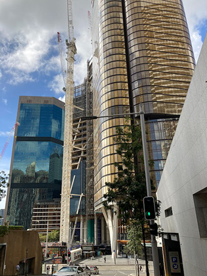
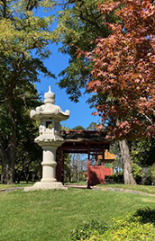

Architecture
Architecture is the art and style of designing and creating a building, as well as the skills asociated with construction.
If you take a moment to look and observe the buildings that you might walk past every day, but have never actually taken the time to observe, you will open your eyes to a world full of shapes, different geometries complementing eachother, and angles that you wouldn't think possible in a normal brick and morter box.
With the right angles and settings you can transform a normal ordinary structure or building into a beautiful display of colours, shapes, geometry, and angles, like a feast for the eyes.


TIPS FOR TAKING ARCHITECTURE PHOTOS
Taking architecture photos is reasonably easy and simple and you can be very creative with it too, you can experiment with all things, angles, lighting, and focus.
A tripod is a very helpful tool when it comes to taking photos of buildings, a tripod helps to keep the camera stable while you shoot, and can keep blur and movement to a minimum. When taking photos of architecture in most cases you are aiming to capture clear and crisp imagery of the subject, and a tripod 100% helps with that.
Angles and how you shoot your subject can be experimented with, changed and adjusted to your liking and to your satisfaction, try getting low, to create a sense of scale and power and convey a more ominous feeling, maybe tilt the camera a bit for some more action in the frame, these shots are called 'canted shots' and you can get very interesting results when you tilt or angle your camera.
Composition is also something to think about in order to enhance your image, making everything even can really create a good and balanced shot, you can also experiment with things like, rule of thirds and other ways to compose your shots.
Lighting is also a very important aspect of any photo, as without lighting you literally can't see anything. So when you are setting up to take a photo, keep in mind the lighting of the shot. Good lighting can really complete and bring together a shot.